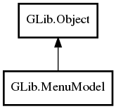

MenuModel
Object Hierarchy:

Description:
public abstract class MenuModel :
Object
Namespace: GLib
Package: gio-2.0
Content:
Creation methods:
Methods:
- public bool get_item_attribute (int item_index, string attribute, string format_string, ...)
- public virtual Variant get_item_attribute_value (int item_index, string attribute, VariantType? expected_type)
- public virtual void get_item_attributes (int item_index, HashTable<void*,void*> attributes)
- public virtual MenuModel get_item_link (int item_index, string link)
- public virtual void get_item_links (int item_index, HashTable<void*,void*> links)
- public virtual int get_n_items ()
- public virtual bool is_mutable ()
- public virtual MenuAttributeIter iterate_item_attributes (int item_index)
- public virtual MenuLinkIter iterate_item_links (int item_index)
Signals: